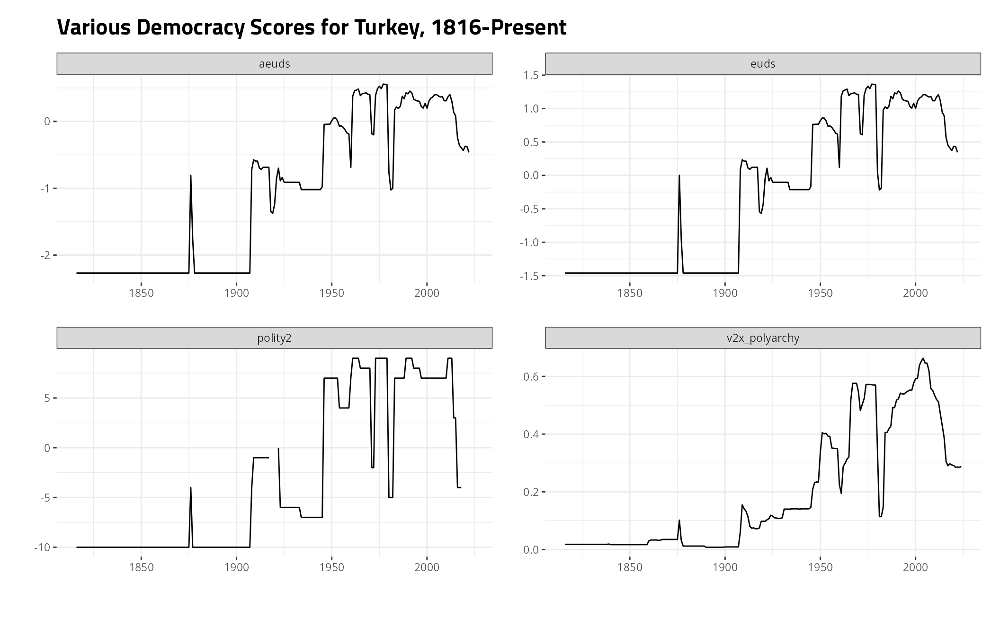
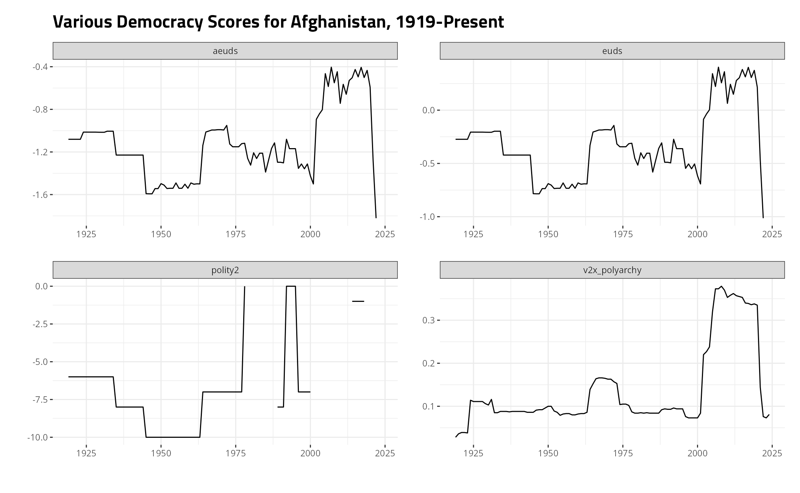

Fixing Unnecessary Missingness in Democracy Scores in `{peacesciencer}`
Source:vignettes/democracy.Rmd
democracy.Rmd
library(tidyverse)
#> ── Attaching packages ─────────────────────────────────────── tidyverse 1.3.1 ──
#> ✓ ggplot2 3.3.5 ✓ purrr 0.3.4
#> ✓ tibble 3.1.4 ✓ dplyr 1.0.7
#> ✓ tidyr 1.1.4 ✓ stringr 1.4.0
#> ✓ readr 2.0.2 ✓ forcats 0.5.1
#> ── Conflicts ────────────────────────────────────────── tidyverse_conflicts() ──
#> x dplyr::filter() masks stats::filter()
#> x dplyr::lag() masks stats::lag()
library(peacesciencer)
library(kableExtra)
#>
#> Attaching package: 'kableExtra'
#> The following object is masked from 'package:dplyr':
#>
#> group_rows
library(stevemisc)
#>
#> Attaching package: 'stevemisc'
#> The following object is masked from 'package:dplyr':
#>
#> tbl_dfMissing data are everywhere in almost all statistical models in the political and social sciences. Canonical cases consider missingness in just the outcome variable, but it’s almost always the case that there are missing data across multiple (if not all) variables in a model. A regression model selects on complete cases and will thus punt rows from consideration in the model where any variable is missing. This is potentially a major problem for statistical inference, though the implication for inference is contingent on both type and scope.1 Generally, unless missing data are missing completely at random and/or missingness pervades less than 5% of the data, the potential for bias in the analysis looms large. Inter-state conflict researchers often do not consider how much this concerns their analysis because the number of observations in a given dyad-year or state-year analysis will still be in the high thousands. However, the remaining number of observations is less the point than the percentage missing and excluded from the analysis.
From my experience with dyad-year and state-year analyses, the biggest offender here will be the democracy scores for states. The reasons for this are multiple and mostly stem from the use of Polity data. The Polity project, for all I can tell, may not necessarily be the oldest cross-national data set on democracy for scholars who have been doing peace science analyses for the past three or four decades. However, the Polity data set is certainly one of the oldest cross-national data sets on democracy and one of the oldest with great coverage into the 19th century. This would coincide with the Correlates of War state system data and the emergence of the militarized inter-state dispute (MID) data in the 1980s and 1990s. The democracy score that researchers would use was almost always the polity2 variable in the data, which added the democracy score and autocracy score together into a 21-item [-10:10] index. Shortcomings here, though, are multiple, leaving aside comments about whether we can adequately understand democracy as a battery of executive constraints and execute-level open competition. For one, the Polity project only considers states with a population of at least a million whereas state system membership (certainly CoW) has a population threshold of 500,000. This means a localized sample of post-World War II conflicts won’t have any Eastern Caribbean observations in it and the 1983 invasion of Grenada won’t appear in the analyses. Further, the Polity project is also replete with interregnum observations, which are often treated as missing data because the missing codes operate outside the 21-item index.
Consider the ccode_democracy data I provide in peacesciencer as illustrative of what’s at stake. You can (and should for transparency’s sake) see the underlying code that generates this data set on the Github repository for this package. Briefly, this is a data set that takes Version 10 of the Vdem data and the 2017 version of the Polity data (along with Xavier Marquez’ UDS extensions, more on that later) and standardizes both to Correlates of War state system membership data.
#library(tidyverse)
#library(peacesciencer)
ccode_democracy
#> # A tibble: 16,731 × 5
#> ccode year v2x_polyarchy polity2 xm_qudsest
#> <dbl> <dbl> <dbl> <dbl> <dbl>
#> 1 2 1816 0.367 9 0.707
#> 2 2 1817 0.37 9 0.707
#> 3 2 1818 0.365 9 0.707
#> 4 2 1819 0.362 9 0.707
#> 5 2 1820 0.349 9 0.707
#> 6 2 1821 0.336 9 0.707
#> 7 2 1822 0.341 9 0.707
#> 8 2 1823 0.345 9 0.707
#> 9 2 1824 0.345 9 0.707
#> 10 2 1825 0.341 9 0.707
#> # … with 16,721 more rowsDoing this highlights just how much missingness there is in our democracy data. For example, let’s standardize these data to all observations between 1816 and 2010 and see how much of the data are missing.
ccode_democracy %>%
filter(between(year, 1816, 2010)) %>%
summarize(perc_missing = sum(is.na(polity2))/length(polity2))
#> # A tibble: 1 × 1
#> perc_missing
#> <dbl>
#> 1 0.0850Over 8% of the Polity data are missing in the CoW state system. Here would be the observations affected, starting with the states that don’t appear at all in the Polity data.
# library(kableExtra)
ccode_democracy %>%
filter(between(year, 1816, 2010)) %>%
group_by(ccode) %>%
mutate(nobs = n()) %>%
filter(is.na(polity2)) %>%
group_by(ccode) %>%
summarize(n = n(),
nobs = unique(nobs),
years = str_c(year, collapse = ", ")) -> missing_obs
missing_obs %>%
filter(n == nobs) %>%
mutate(country = countrycode::countrycode(ccode, "cown", "country.name")) %>%
select(ccode, country, n, nobs) %>%
kbl(., caption = "CoW States that Never Appear in the Polity Data") %>%
kable_styling(position = "center", full_width = F, bootstrap_options = "striped")| ccode | country | n | nobs |
|---|---|---|---|
| 31 | Bahamas | 38 | 38 |
| 53 | Barbados | 45 | 45 |
| 54 | Dominica | 33 | 33 |
| 55 | Grenada | 37 | 37 |
| 56 | St. Lucia | 32 | 32 |
| 57 | St. Vincent & Grenadines | 32 | 32 |
| 58 | Antigua & Barbuda | 30 | 30 |
| 60 | St. Kitts & Nevis | 28 | 28 |
| 80 | Belize | 30 | 30 |
| 221 | Monaco | 18 | 18 |
| 223 | Liechtenstein | 21 | 21 |
| 232 | Andorra | 18 | 18 |
| 240 | Hanover | 30 | 30 |
| 273 | Hesse Electoral | 51 | 51 |
| 275 | Hesse Grand Ducal | 52 | 52 |
| 280 | Mecklenburg Schwerin | 25 | 25 |
| 331 | San Marino | 19 | 19 |
| 338 | Malta | 47 | 47 |
| 395 | Iceland | 67 | 67 |
| 403 | São Tomé & Príncipe | 36 | 36 |
| 511 | Zanzibar | 2 | 2 |
| 591 | Seychelles | 35 | 35 |
| 781 | Maldives | 46 | 46 |
| 835 | Brunei | 27 | 27 |
| 935 | Vanuatu | 30 | 30 |
| 946 | Kiribati | 12 | 12 |
| 947 | Tuvalu | 11 | 11 |
| 955 | Tonga | 12 | 12 |
| 970 | Nauru | 12 | 12 |
| 983 | Marshall Islands | 20 | 20 |
| 986 | Palau | 17 | 17 |
| 987 | Micronesia (Federated States of) | 20 | 20 |
| 990 | Samoa | 35 | 35 |
These seem like uncontroversial omissions. Perhaps no one will miss Monaco or Tonga in a dyad-year model on conflict onset. However, there are several problematic omissions here. The exclusion of Hanover, the two Hesses (sic), and Mecklenburg means there will be some important conflict-dyad omissions for the various wars of German unification. Belize has (I would argue) a prominent, conspicuous, and interesting spatial rivalry with Guatemala. Guatemala has at points, has refused to acknowledge Belize’ right to exist, but Belize is no stranger to initiating low-level disputes on the border as well. The Eastern Caribbean omissions mean every observation in the 1983 invasion of Grenada will be dropped. Trinidad and Tobago has a territorial conflict with Venezuela regarding its oil-rich maritime boundary. It even had a violent coup attempt in 1990, which appears in the UCDP data.
Here are the observations for which there is only situational missingness in the Polity data.
missing_obs %>%
filter(n < nobs) %>%
mutate(country = countrycode::countrycode(ccode, "cown", "country.name")) %>%
select(ccode, country, everything()) %>%
kbl(., caption = "Situational Missigness in the Polity Data") %>%
kable_styling(position = "center", full_width = F, bootstrap_options = "striped")| ccode | country | n | nobs | years |
|---|---|---|---|---|
| 41 | Haiti | 1 | 134 | 1915 |
| 42 | Dominican Republic | 4 | 110 | 1914, 1915, 1916, 1924 |
| 70 | Mexico | 3 | 180 | 1846, 1847, 1863 |
| 91 | Honduras | 4 | 112 | 1907, 1912, 1919, 1924 |
| 93 | Nicaragua | 2 | 111 | 1926, 1927 |
| 135 | Peru | 2 | 172 | 1881, 1882 |
| 140 | Brazil | 2 | 189 | 1822, 1823 |
| 210 | Netherlands | 1 | 191 | 1940 |
| 211 | Belgium | 3 | 177 | 1914, 1939, 1940 |
| 212 | Luxembourg | 2 | 88 | 1940, 1944 |
| 225 | Switzerland | 32 | 195 | 1816, 1817, 1818, 1819, 1820, 1821, 1822, 1823, 1824, 1825, 1826, 1827, 1828, 1829, 1830, 1831, 1832, 1833, 1834, 1835, 1836, 1837, 1838, 1839, 1840, 1841, 1842, 1843, 1844, 1845, 1846, 1847 |
| 235 | Portugal | 4 | 195 | 1816, 1817, 1818, 1819 |
| 255 | Germany | 2 | 151 | 1945, 1990 |
| 265 | German Democratic Republic | 2 | 37 | 1989, 1990 |
| 267 | Baden | 3 | 56 | 1816, 1817, 1818 |
| 269 | Saxony | 1 | 52 | 1848 |
| 310 | Hungary | 2 | 93 | 1944, 1956 |
| 329 | Two Sicilies | 1 | 46 | 1861 |
| 345 | Yugoslavia | 2 | 131 | 1915, 1916 |
| 346 | Bosnia & Herzegovina | 16 | 19 | 1995, 1996, 1997, 1998, 1999, 2000, 2001, 2002, 2003, 2004, 2005, 2006, 2007, 2008, 2009, 2010 |
| 350 | Greece | 4 | 181 | 1916, 1917, 1918, 1919 |
| 355 | Bulgaria | 1 | 103 | 1913 |
| 360 | Romania | 1 | 133 | 1916 |
| 366 | Estonia | 1 | 43 | 1918 |
| 367 | Latvia | 2 | 43 | 1918, 1919 |
| 385 | Norway | 1 | 102 | 1940 |
| 390 | Denmark | 1 | 191 | 1940 |
| 452 | Ghana | 3 | 54 | 1957, 1958, 1959 |
| 500 | Uganda | 1 | 49 | 1979 |
| 530 | Ethiopia | 2 | 109 | 1936, 1941 |
| 552 | Zimbabwe | 5 | 46 | 1965, 1966, 1967, 1968, 1969 |
| 616 | Tunisia | 60 | 112 | 1825, 1826, 1827, 1828, 1829, 1830, 1831, 1832, 1833, 1834, 1835, 1836, 1837, 1838, 1839, 1840, 1841, 1842, 1843, 1844, 1845, 1846, 1847, 1848, 1849, 1850, 1851, 1852, 1853, 1854, 1855, 1856, 1857, 1858, 1859, 1860, 1861, 1862, 1863, 1864, 1865, 1866, 1867, 1868, 1869, 1870, 1871, 1872, 1873, 1874, 1875, 1876, 1877, 1878, 1879, 1880, 1881, 1956, 1957, 1958 |
| 640 | Turkey | 4 | 195 | 1918, 1919, 1920, 1921 |
| 645 | Iraq | 7 | 79 | 2003, 2004, 2005, 2006, 2007, 2008, 2009 |
| 651 | Egypt | 28 | 102 | 1855, 1856, 1857, 1858, 1859, 1860, 1861, 1862, 1863, 1864, 1865, 1866, 1867, 1868, 1869, 1870, 1871, 1872, 1873, 1874, 1875, 1876, 1877, 1878, 1879, 1880, 1881, 1882 |
| 652 | Syria | 1 | 63 | 1958 |
| 660 | Lebanon | 15 | 65 | 1990, 1991, 1992, 1993, 1994, 1995, 1996, 1997, 1998, 1999, 2000, 2001, 2002, 2003, 2004 |
| 690 | Kuwait | 3 | 50 | 1961, 1962, 1990 |
| 700 | Afghanistan | 20 | 92 | 1979, 1980, 1981, 1982, 1983, 1984, 1985, 1986, 1987, 1988, 2001, 2002, 2003, 2004, 2005, 2006, 2007, 2008, 2009, 2010 |
| 710 | China | 11 | 151 | 1860, 1861, 1937, 1938, 1939, 1940, 1941, 1942, 1943, 1944, 1945 |
| 712 | Mongolia | 3 | 90 | 1921, 1922, 1923 |
| 740 | Japan | 1 | 145 | 1945 |
| 750 | India | 3 | 64 | 1947, 1948, 1949 |
| 771 | Bangladesh | 1 | 40 | 1971 |
| 800 | Thailand | 1 | 124 | 1941 |
| 811 | Cambodia | 9 | 58 | 1979, 1980, 1981, 1982, 1983, 1984, 1985, 1986, 1987 |
| 812 | Laos | 1 | 58 | 1953 |
| 817 | Republic of Vietnam | 9 | 22 | 1954, 1965, 1966, 1967, 1968, 1969, 1970, 1971, 1972 |
| 940 | Solomon Islands | 1 | 33 | 2003 |
Some of these are really important omissions! Bosnia & Herzegovina only has democracy scores for its first three years in the system. Hungary has missing data incidentally coinciding with the year of the Soviet invasion in 1956. Tunisia’s entire first spell in the CoW state system is missing, as are the first few years of its reappearance in the 1950s. Over 40% of the short-lived Republic of Vietnam’s democracy data are missing. Missingness in Europe coinciding with the end of World War I is going to drop a lot of important conflicts of the time (see: Latvia in 1918 and 1919). The Dominican Republic’s democracy scores go missing, just in time to drop the U.S. invasion of it from any analysis. Incidentally, a lot of missing observations here are going to collide with major conflicts. Perhaps a researcher can sidestep some of these problems by lagging the democracy variable a year, but that won’t fix all of them. After all, some countries are effectively born in/from conflict (e.g. Bosnia, India, Pakistan, the two Koreas, and more). If a researcher is not careful here, there will be more missingness in the data than meets the eye.
There’s no reason to accept these missing observations as a cost of doing business with Polity. That’s why peacesciencer brings in multiple data sets that have better coverage than Polity. The most unique of these comes from Xavier Marquez’ extension of the Unified Democracy Scores (UDS) data. The UDS data were designed to be a sort of “compromise” between competing measures of democracy, but the underlying statistical model—the graded response model—serves as a missing data fix too. If, say, the Polity project does not have observations of a particular state in a given year, the model leans on other inputs to derive a democracy estimate. The standard error of the estimate increases with missing inputs, but a lot of measures of democracy correlate highly regardless. The ensuing estimate, drawn from a standard normal distribution, serves as a solid estimate of the level democracy in a given year. It’s included in ccode_democracy as xm_qudest.
Here are a few cases of Xavier Marquez’ filling in missing data while also passing the look test. First, here’s Turkey.2
# library(stevemisc)
ccode_democracy %>%
# select(-v2x_polyarchy) %>%
filter(ccode == 640) %>%
gather(var, val, -ccode, -year) %>%
ggplot(.,aes(year, val)) +
theme_steve_web() +
facet_wrap(~var, nrow= 3, scales = "free") + geom_line() +
labs(y = "", x = "",
title = "Various Democracy Scores for Turkey, 1816-2010")
#> Warning: Removed 3 row(s) containing missing values (geom_path).
Here’s Afghanistan, a mostly non-democratic country throughout its history.
# library(stevemisc)
ccode_democracy %>%
# select(-v2x_polyarchy) %>%
filter(ccode == 700) %>%
gather(var, val, -ccode, -year) %>%
ggplot(.,aes(year, val)) +
theme_steve_web() +
facet_wrap(~var, nrow= 3, scales = "free") + geom_line() +
labs(y = "", x = "",
title = "Various Democracy Scores for Afghanistan, 1919-2010")
#> Warning: Removed 3 row(s) containing missing values (geom_path).
Here’s Portugal, a country that democratized at various points in its history.
# library(stevemisc)
ccode_democracy %>%
# select(-v2x_polyarchy) %>%
filter(ccode == 235) %>%
gather(var, val, -ccode, -year) %>%
ggplot(.,aes(year, val)) +
theme_steve_web() +
facet_wrap(~var, nrow= 3, scales = "free") + geom_line() +
labs(y = "", x = "",
title = "Various Democracy Scores for Portugal, 1816-2010")
#> Warning: Removed 7 row(s) containing missing values (geom_path).Here’s a correlation matrix for the three democracy estimates across time and space. Notice that Marquez’ UDS extensions correlate with polity2 at .94 and with the Vdem data at .91. That’s better than the correlation between polity2 and the Vdem data.
ccode_democracy %>%
select(v2x_polyarchy:ncol(.)) %>%
cor(use="complete.obs")
#> v2x_polyarchy polity2 xm_qudsest
#> v2x_polyarchy 1.0000000 0.8599225 0.9158889
#> polity2 0.8599225 1.0000000 0.9413074
#> xm_qudsest 0.9158889 0.9413074 1.0000000More importantly, look at the data coverage of the UDS extensions vis-a-vis alternatives.
ccode_democracy %>%
filter(between(year, 1816, 2010)) %>%
summary
#> ccode year v2x_polyarchy polity2
#> Min. : 2.0 Min. :1816 Min. :0.0080 Min. :-10.0000
#> 1st Qu.:200.0 1st Qu.:1917 1st Qu.:0.1430 1st Qu.: -7.0000
#> Median :359.0 Median :1967 Median :0.2350 Median : -3.0000
#> Mean :393.6 Mean :1949 Mean :0.3436 Mean : -0.4115
#> 3rd Qu.:616.0 3rd Qu.:1991 3rd Qu.:0.5450 3rd Qu.: 7.0000
#> Max. :990.0 Max. :2010 Max. :0.9230 Max. : 10.0000
#> NA's :1008 NA's :1257
#> xm_qudsest
#> Min. :-1.76974
#> 1st Qu.:-0.43923
#> Median : 0.08278
#> Mean : 0.25368
#> 3rd Qu.: 0.97599
#> Max. : 2.98554
#> NA's :4
ccode_democracy %>%
filter(between(year, 1816, 2010)) %>%
filter(is.na(xm_qudsest)) -> missing_xm
missing_xm
#> # A tibble: 4 × 5
#> ccode year v2x_polyarchy polity2 xm_qudsest
#> <dbl> <dbl> <dbl> <dbl> <dbl>
#> 1 300 1918 NA 0 NA
#> 2 329 1861 NA NA NA
#> 3 616 1881 0.026 NA NA
#> 4 651 1882 0.074 NA NAMarquez’ UDS extensions are missing for just four cases: Austria-Hungary in 1918, Two Sicilies in 1861, Tunisia in 1881, and Egypt in 1882. That’s better coverage than the alternatives. A user can accept these as missing observations since they involve just four cases. Alternatively, a user can knock off three of those with some kind of parlor trick like this.
M1 <- lm(xm_qudsest ~ polity2, data=ccode_democracy)
M2 <- lm(xm_qudsest ~ v2x_polyarchy, data=ccode_democracy)
pol_intercept <- broom::tidy(M1)[1, 2] %>% pull()
pol_coef <- broom::tidy(M1)[2, 2] %>% pull()
vdem_intercept <- broom::tidy(M2)[1, 2] %>% pull()
vdem_coef <- broom::tidy(M2)[2, 2] %>% pull()
ccode_democracy %>%
mutate(impute_pol = pol_intercept + polity2*pol_coef,
impute_vdem = vdem_intercept + v2x_polyarchy*vdem_coef) %>%
mutate(imputed = case_when(
is.na(xm_qudsest) & !is.na(polity2) ~ impute_pol,
is.na(xm_qudsest) & !is.na(v2x_polyarchy) ~ impute_vdem,
TRUE ~ xm_qudsest
)) %>% select(-xm_qudsest) %>%
left_join(missing_xm, .)
#> Joining, by = c("ccode", "year", "v2x_polyarchy", "polity2")
#> # A tibble: 4 × 8
#> ccode year v2x_polyarchy polity2 xm_qudsest impute_pol impute_vdem imputed
#> <dbl> <dbl> <dbl> <dbl> <dbl> <dbl> <dbl> <dbl>
#> 1 300 1918 NA 0 NA 0.273 NA 0.273
#> 2 329 1861 NA NA NA NA NA NA
#> 3 616 1881 0.026 NA NA NA -0.728 -0.728
#> 4 651 1882 0.074 NA NA NA -0.582 -0.582Whatever you choose to do here, a conflict researcher should take missing data seriously in their democracy estimates. peacesciencer does, which is why the add_democracy() function in this package does more than merge in Polity data.